Projekte
Lager, Autohaus, Supermarkt oder Café: Hier sehen Sie Böden aus aller Welt, die mit Produkten von Curecrete behandelt wurden. Ein Klick auf ein Foto öffnet die große Ansicht.

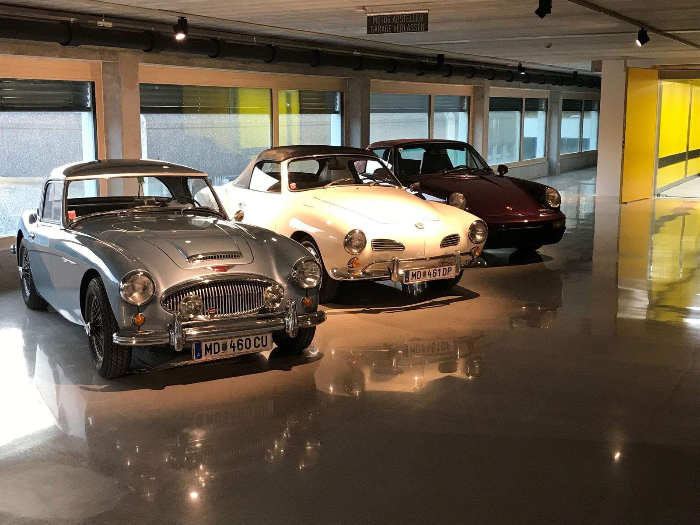
5 Fotos


Classic Depot
RetroPlate, RetroPel

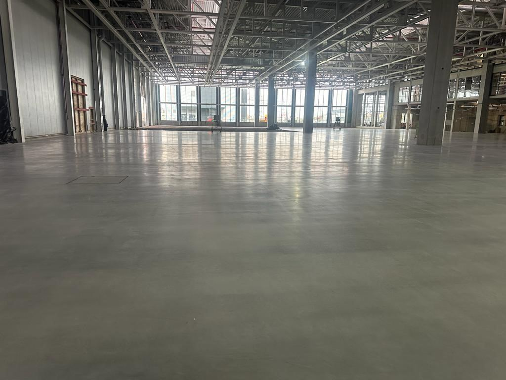
2 Fotos
SEW-EURODRIVE
Ashford Formula

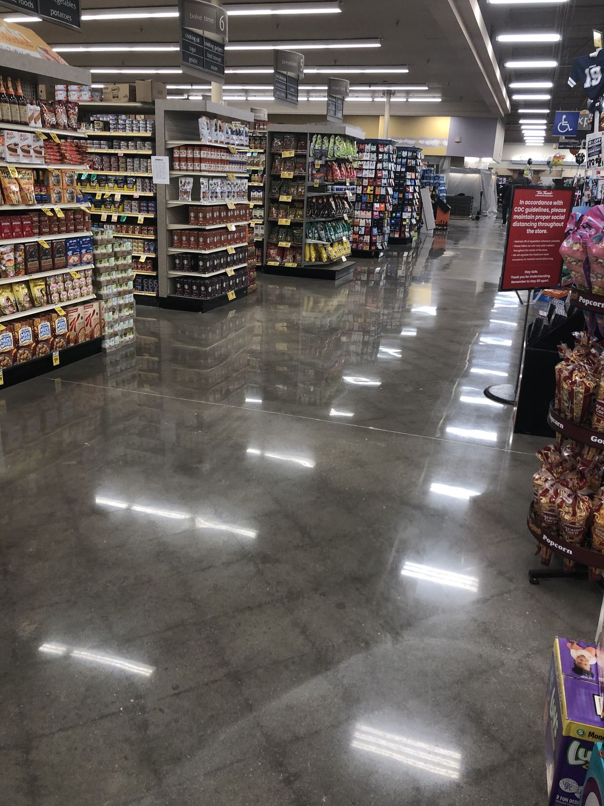
Supermarkt
RetroPlate, RetroGuard, CreteFill

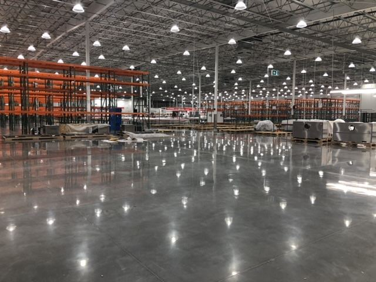
Costco
RetroPlate

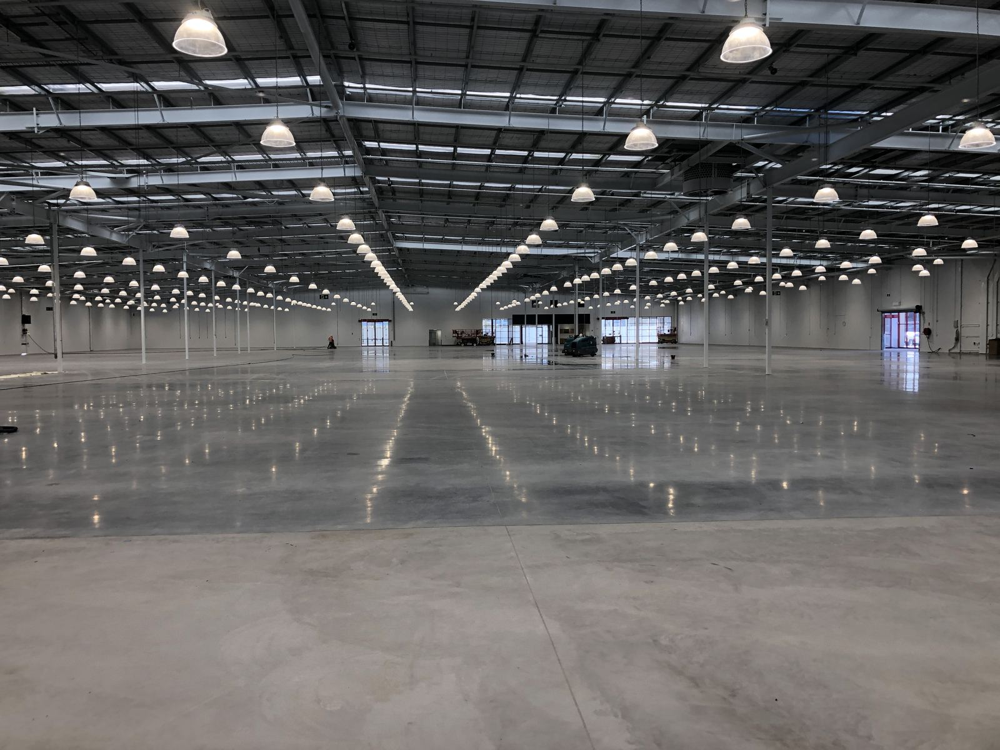
Bunnings Baumarkt
Ashford Formula

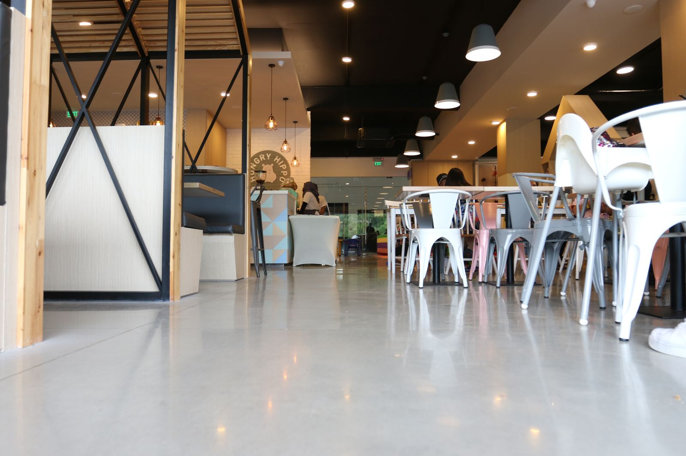
2 Fotos
Café Hungry Hippo
Ashford Formula, RetroPlate

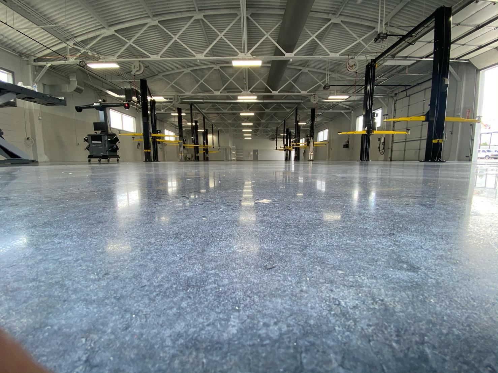
VW-Autohaus
RetroPlate

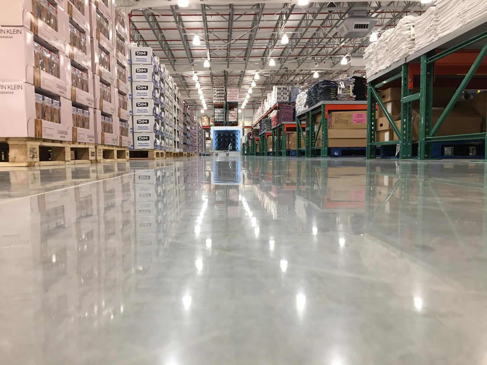
Costco
Produkte von Curecrete

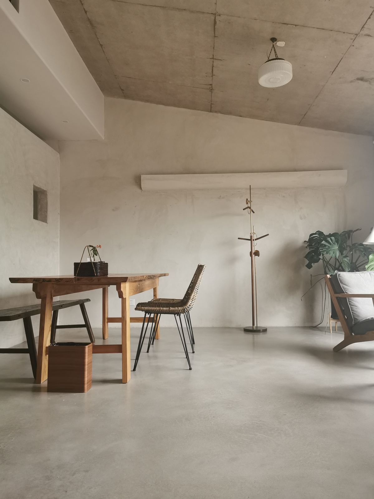
Gästehaus
Ashford Formula, RetroPlate

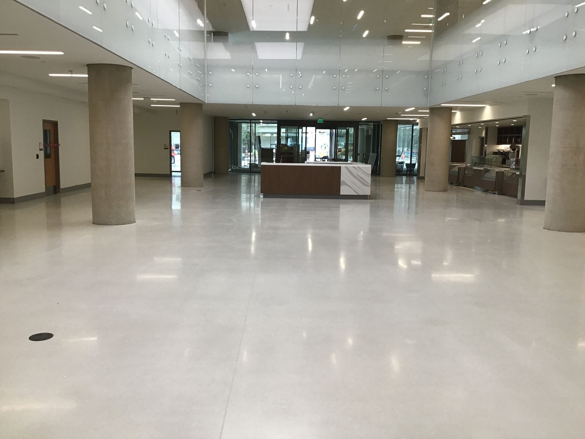
Bürogebäude
RetroPlate, CreteFill

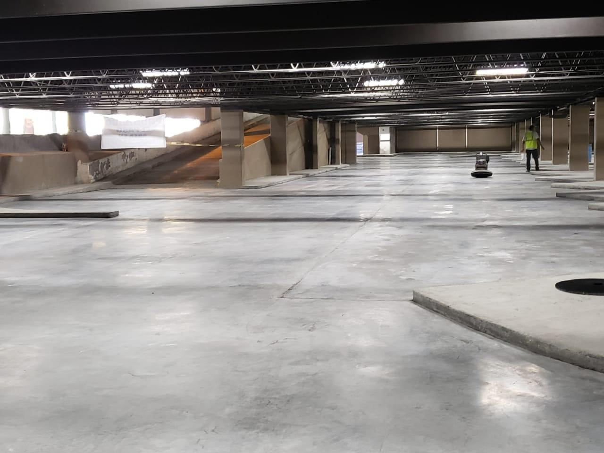
Parkdeck
Produkte von Curecrete

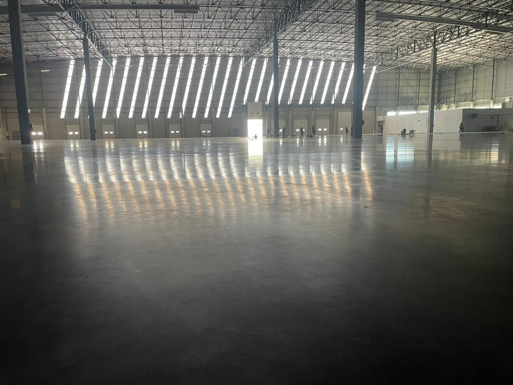
Logistikhalle
Ashford Formula

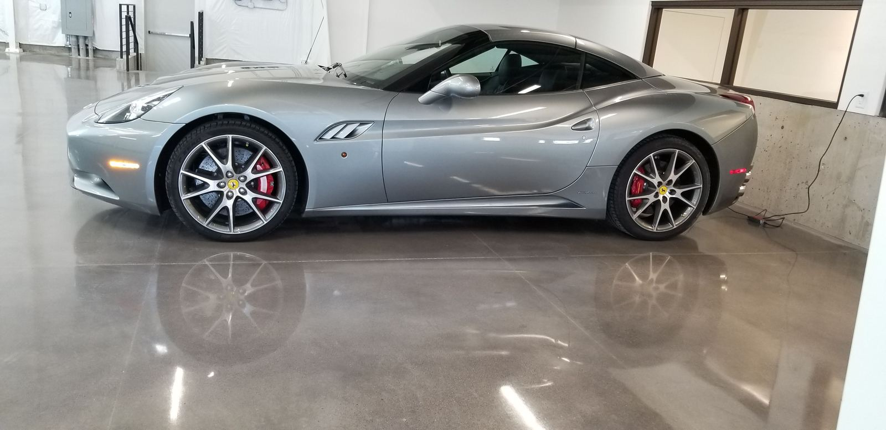
Autoshowroom
Produkte von Curecrete
Noch mehr Referenzen
Im Projektbuch von Curecrete finden Sie Fallbeispiele aus vielen Branchen, von der Tiefgarage bis zum Rechenzentrum. Das Projektbuch ist auf Englisch.
Ihr Boden als nächstes Projekt?
Erzählen Sie uns von Ihrem Objekt. Wir melden uns und bringen Sie mit dem passenden Fachbetrieb zusammen.